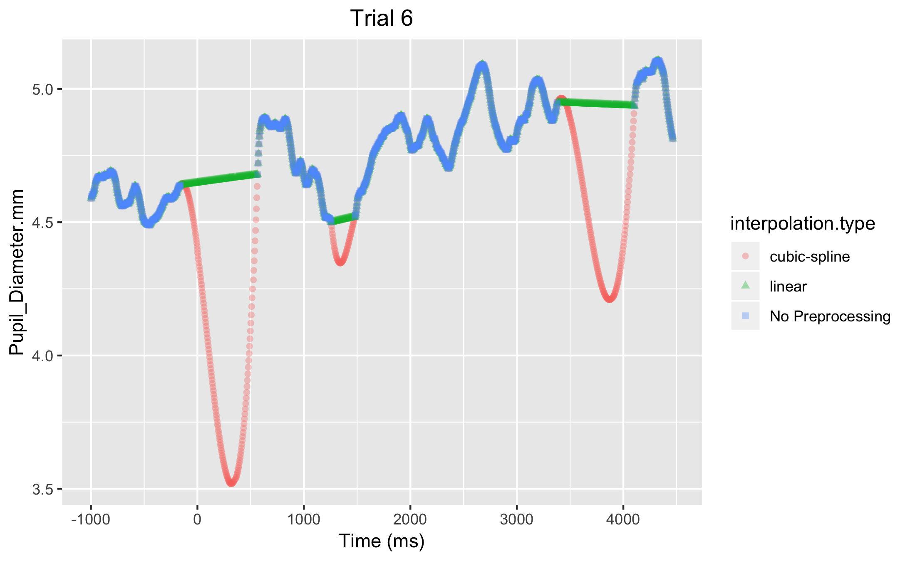
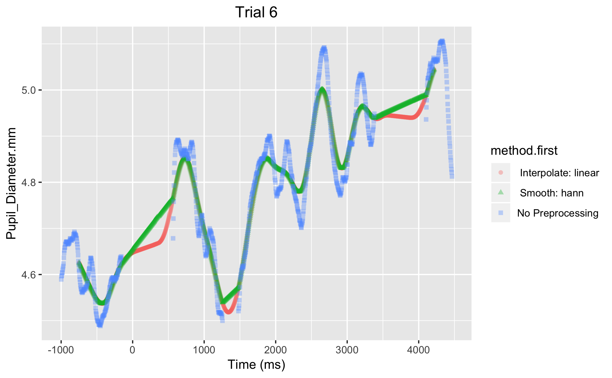

Smooth or Interpolation First?
Source:vignettes/smooth_interpolate_first.Rmd
smooth_interpolate_first.RmdOne question when considering preprocessing methods is whether to first smooth the data or first interpolate missing values?
Below, I demonstrate that at least when using this package to preprocess pupil data it is better to smooth the data before applying a cubic-spline interpolation. There is not as big of a difference if you are applying a linear interpolation. Therefore, it is advisable to apply smoothing before interpolation.
Example Data
The example data is from a simple pitch discrimination task I administered to myself. There were only six trials. Trials 2 and 6 had the largest chuncks of missing data so I decided to test out whether applying smoothing or interpolation first changes the preprocessed data.
From these examples, it can be seen that if you are gonig to apply a cubic-spline interpolation, then you should also apply smoothing and it is important that you choose method_first = "smooth". Otherwise the data get overly distorted if you apply interpolation first (see Trial 6).
These data come from a pitch discrimination task as described in the Example Data Set article. Time = 0 is the onset of the first tone.
In all the figures, at some point the time-series “lines” might overlap considerably and it only looks like one color is there. In fact, all colored lines are present during those periods, they are just overlapping. If smoothing was applied, then smooth.window = 500.
On Trial 6 there are a couple of “major” gaps of missing pupil data. You can see that if you use cubic-spline interpolation without smoothing (Figure 1), then the interpolated values are exaggerated and most likely unrealistic (see the period of 0 - 500 ms). It is very unlikely that pupil size is decreasing and then increasing by over 1 mm within a 500 ms interval. Thee cubic-spline interpolation might be modeling too much high frequency noise in the data. You can see that the linear interpolation does not suffer from the same problem. However, if there was truly a decrease during that interval then the linear interpolation is not capturing that.

Figure 1. Interpolation only. Cubic-spline interpolation (pink line) results in unrealistic interpolated values
Figure 2 shows the same trial but with smoothing applied. With either method_first = "smooth" (green line) or method_first = "interpolate" (pink line). Both lines used cubic-spline interpolation, the only difference is whether smoothing was applied first or not. You can see that applying smoothing before a cubice-spline interpolation avoids the issue seen in Figure 1 and the pink line in Figure 2.

Figrue 2. Applying smoothing before cubic-spline interpolation (green line) results in more realistic values than applying smoothing after cubic-spline interpolation (pink line)
There is not as big of a difference for linear interpolation.
For linear interpolation, the issue of applying smoothing first or not is not as big of an issue (Figure 3).

Figure 3. Applying smoothing before linear interpolation (green line) results in slightly different values then applying smoothing after linear interpolation (pink line). If anything, applying smoothing after linear interpolation is slightly more accurate. However, after aggregation over trials the result would not be different between the two.
And here is Trial 6 if you were to do smoothing but no interpolation (Figure 4)

Figure 4. This just shows the difference between the two smoothing methods available.
Trial 2 shows a similar pattern when you use cubic-spline interpolation (Figure 5).

Figure 5. Applying smoothing before cubic-spline interpolation (green line) results in more realistic values than applying smoothing after cubic-spline interpolation (pink line)
These comparisons demonstrate the importance of being careful what types of preprocessing paramteres you specify. Based on this small sample of data it is suggested, that if you are going to apply an interpolation method, that you first apply smoothing, particularly if you are applying cubic-spline interpolation.